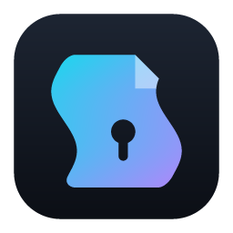

Schuyler's Lightweight Armored Text Editor
A secure, native macOS home for your encrypted notes.
View, edit, and re-encrypt .gpg and .age text & markdown files —
with GPG + hardware security keys or a 12-word seed phrase, mlock'd memory, and a hard rule that plaintext never
touches disk. Global hotkeys capture notes from anywhere; a write-only CLI lets AI agents add to your
notes without ever reading them.
Universal binary · Apple Silicon + Intel · free & open source (MIT) · or build it yourself from source
Schl8 is experimental software with no independent security audit.
It is built carefully — locked memory, zeroization, compile-time trait guarantees, a documented threat model — but "built carefully" is not "professionally verified." Never let a Schl8-managed file be the only copy of something important, and don't rely on it to protect data whose exposure would seriously harm you.
Its second life is as a worked example: a small, readable Rust codebase showing how to build a security-conscious desktop app. If your threat model is serious, read the source, take the ideas, and build or audit your own.
I built Schl8 for myself: I wanted a private place for my own notes, and a real project for learning how a native macOS app fits together. It became something I use every day, so I'm sharing it.
It's a personal tool and an open codebase, not a commercial product. If you want to know how any of it works, the README is the place to start, and the technical self-critique keeps an honest list of what could be better.
The fastest way to lose a thought is to open an app, find the right file, and find the right place in it. Schl8 removes those steps. It lives in the menu bar, and every registered note has its own system-wide hotkey: press it in any application, type, hit Enter. The window is gone in two seconds and the text is already encrypted.
Different kinds of information go to different notes — a daily journal, an inbox to sort later, an ideas file, a work log, one note per project. You can register up to 25, each with its own hotkey, which pairs well with a programmable keypad: one physical button per destination.
Redundancy is part of the same motion. Each note can encrypt to several keys, and each key can write to several destinations — so one capture lands in your working copy, on a second disk, and in a cloud-synced folder in the same keystroke, every copy encrypted. A post-save hook can commit or sync the files automatically. Set it up once in Quick Note Files… and Save Options…; after that it's just the hotkey.
Decrypts via your system GnuPG and gpg-agent — passphrase or hardware-key PIN, exactly the trust chain you already use. Hardware MFA / security keys work through gpg's smart-card support; YubiKey is the only one tested so far.
No GnuPG? Encrypt with AGE using an X25519 identity derived from a 12-word BIP-39 seed phrase. The private key is rebuilt on unlock, held only in locked memory, and never written to disk — Schl8 runs fully AGE-only when gpg isn't installed.
Decrypted content flows from GPG (or AGE) straight into mlock'd, zeroize-on-drop buffers. No temp files, no swap, no clipboard by default, core dumps disabled.
Styled rendering for encrypted markdown, full-window in-place editing, and saving that always re-encrypts — Schl8 cannot write plaintext.
A global hotkey summons a small jot window from anywhere: type, hit Enter, and the note is appended to an encrypted file and re-encrypted. Register up to 25 note files, each with its own hotkey — perfect for keypad macros.
A headless CLI lets Claude Code, Codex, and scripts store their output encrypted — using only your public keys. Agents can add to your notes but can never read them, unlock anything, or touch a secret.
Per-file plans encrypt every save to one or more keys, each written to one or more destinations — a working copy plus backups in one keystroke, with optional post-save shell hooks.
Open a folder.tar.gz.gpg archive and browse every text file inside from a sidebar tree — extracted entirely in memory, with decompression-bomb limits.
Idle timeout, display sleep, or screen lock closes the document and zeroizes buffers — and unsaved edits are first encrypted to the document's own key, so locking never costs you work.
A writing mode for first drafts: stop typing for more than a few seconds and the document locks. Unsaved text is stashed encrypted first, so the penalty is unlocking, never lost words — it makes stopping cost something, so the easiest path is forward. Pairs with focus mode — and quick notes can opt in per file: stop typing and the jot saves itself, or closes if you never started.
The document scrolls itself, the way opening titles roll, so a long note reads hands-free. Speed, text size and direction are all adjustable mid-crawl; scrolling by hand takes over and it resumes on its own. Good for proof-reading, where the motion stops your eye skating over a sentence it has already read six times.
Menu-bar residency, Finder "Open With", 16 contrast-checked themes, favorites and quicknotes on their own global hotkeys, rebindable shortcuts, a focus mode, encrypted settings backup, and vim-style navigation on qwerty/dvorak/colemak/workman.
Every note is encrypted to a recipient key. Schl8 speaks two backends — pick per file, or mix both in one save plan (e.g. a GPG working copy plus an AGE backup). You never have to choose one forever.
The OpenPGP path, through your existing GnuPG install and gpg-agent.
gnupg (and pinentry-mac for GUI prompts) installed.A modern format (X25519 + ChaCha20-Poly1305) driven by a 12-word phrase — no keyring, no GnuPG.
age1… key to encrypt notes for someone else.About the AGE seed-phrase path — read before you rely on it.
The AGE backend is newer than the GPG path, and the way Schl8 turns your 12-word phrase into an AGE key is a Schl8-specific derivation (documented and frozen as v1 in AGE-DESIGN.md). The underlying primitives are standard; the exact composition has not been independently audited.
Your seed phrase is your key. Schl8 never writes the phrase or the derived key to disk, so if you lose it, every note encrypted to it is unrecoverable — there is no reset. Write it down and store it offline: on paper in a safe, or on a hardware MFA / security key that can emit static text (a YubiKey static-password slot is the only device tested for this so far). Treat those 12 words like the master key they are.
Schl8 minimizes the exposure window of decrypted plaintext — and is explicit about what it can't defend against.
Full details in the README security model and SECURITY.md.
Grab the app, or build it from source you've read — the second option is the point for the security-minded.
brew install gnupg pinentry-mac
Skip this if you'll use the AGE seed-phrase backend: with no gpg installed, Schl8 runs AGE-only and everything still works. Install it for GPG keys and hardware security keys (YubiKey tested).
Get Schl8-nightly-macos-universal.zip from the
nightly build, unzip, and drag
Schl8.app into Applications. It is rebuilt from the latest commit that
passed the test suite, so it is always current — and always a development build. Tagged versions,
when they exist, live on the releases page.
Schl8 is open source but not notarized with Apple, so macOS blocks the downloaded copy until you run:
xattr -dr com.apple.quarantine /Applications/Schl8.app
Only do this if you're comfortable running un-notarized software. The alternative:
# requires Rust 1.75+ git clone https://github.com/schbz/schl8.git cd schl8 # read the code — that's the point ./scripts/bundle.sh --install
AI agents produce a lot of text worth keeping, and most of it lands in plaintext: scratch files, chat logs, sync folders. Schl8 gives agents a better place to put it. The integration is one sentence: agents write into your encrypted store, and they never read from it. Encrypting to your public key needs no secret, so the agent surface holds zero key material — and there is no decrypt command for anything to misuse.
report | schl8 encrypt --to age1… --out report.md.ageschl8 append --note journal — via the offline spool; it merges when you unlockschl8 notes list --json, schl8 recipients list --jsonschl8 pending --jsonIn the app: Help → Install Command Line Tool… It links schl8
into a folder your shell already searches, preferring one that needs no administrator password.
Add or generate keys under Keys → Manage Public Keys…, and give each quick-note an encryption key in Quick Note Files…. Writing needs only the public half, so agents never touch your private key, your PIN, or your hardware token.
Run `schl8 agent brief` and follow it.
The briefing is generated from your machine's live config — your real keys, notes, and folders —
so it can't go stale the way pasted instructions do. schl8 agent init
drops an AGENTS.md into a project so coding agents need no paste at all,
and schl8 agent toolkit prints a spec your assistant can turn into
standing skills and commands, so "save that to my notes" works in every future conversation.
Full design and threat model in AGENT-DESIGN.md — including what was rejected (headless decrypt, plaintext watch-folders) and why.
Because encrypting to your keys needs no secret, some useful arrangements are easy to build. Each of these is a picture and a command.
A save plan encrypts every save to multiple keys, each with its own destinations, and a post-save hook pushes copies off the machine. Encrypt the backup copy to a different key where you can: a backup that shares its only key with the original doesn't survive losing that key.
Build output, cron results, and session summaries usually accumulate in plaintext log files,
complete with hostnames and tokens in URLs. Piping them through
append --raw seals each entry as it's produced and queues it beside
the note until you unlock.
# at the end of any script, pipeline, or agent task:
./deploy.sh 2>&1 | tail -40 | schl8 append --note ops-log --raw
Some material is a set, not a document — a research area with sources and open questions, a client with contracts and meeting notes, an incident with a timeline and evidence. Stage it, seal it into one archive, and browse it inside Schl8 with a file tree, extracted entirely in memory.
The failure to plan for isn't the missing backup — it's the backup encrypted to a key you no longer hold, which looks identical to a good one until you need it. Verify once, and again after every key change.
schl8 agent brief can walk you through it.An agent researches while you sleep and files its findings encrypted. You read them in the morning — nothing sits in a chat log or scratch file.
During an outage, every terminal and responder appends to one encrypted, append-only timeline. Provenance tags show who — or what — wrote each entry.
Not the secrets — the map: which password manager, which drawer, which safe-deposit box. That document is sensitive too, and it's the one you want findable in a crisis.
Register someone else's public key and encrypt to them. Anyone can seal a note only they can open — no accounts, no server, just a file.